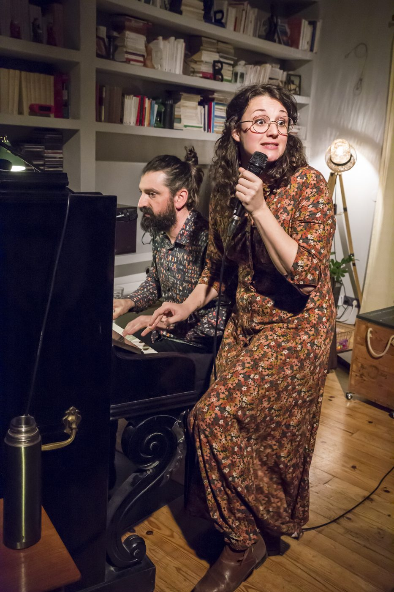
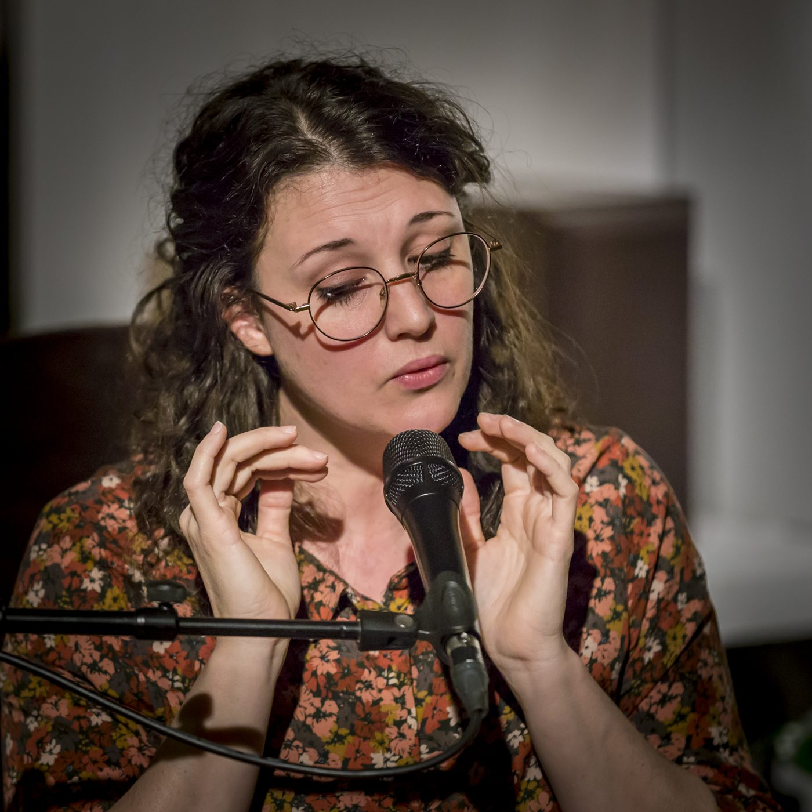
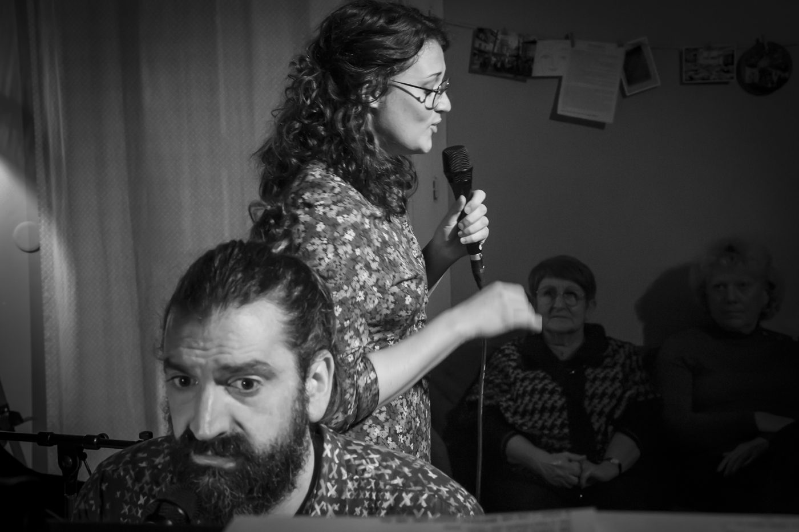
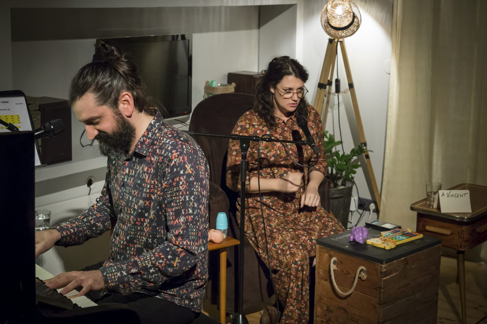
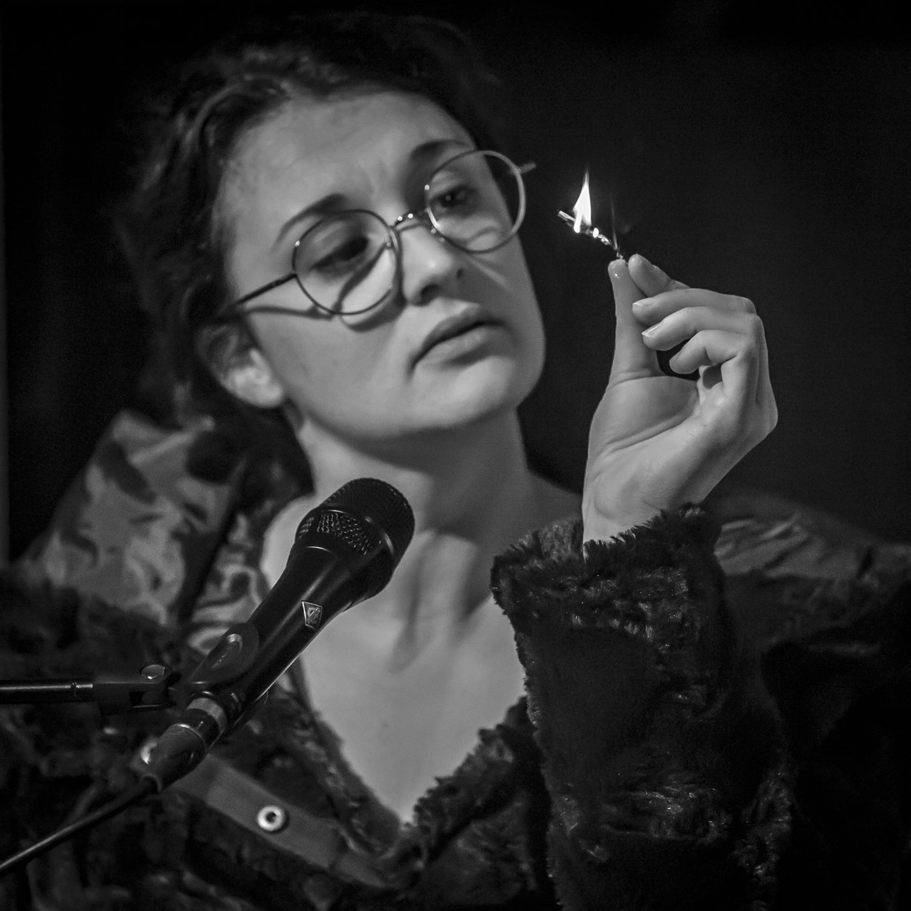
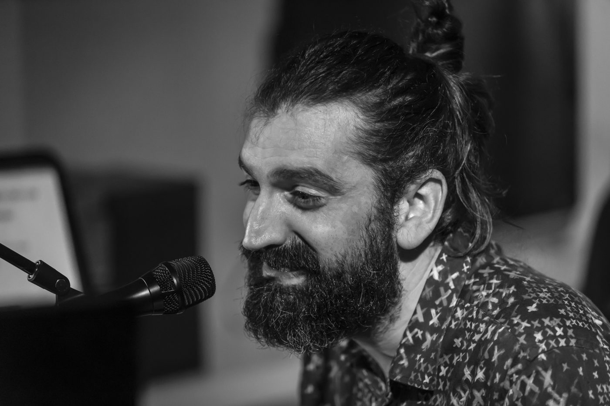
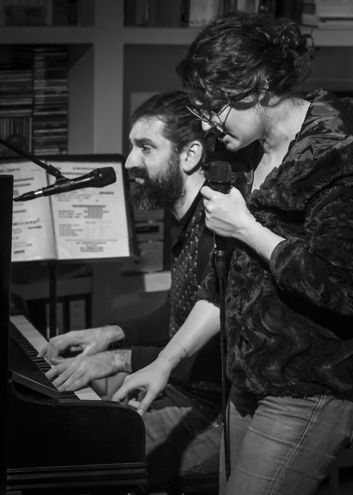
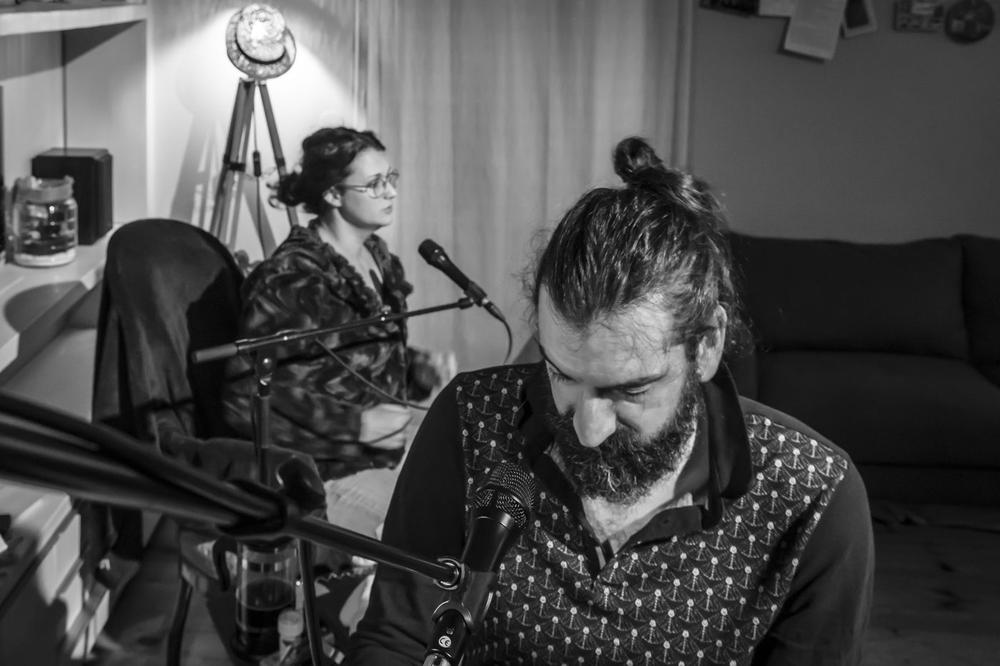
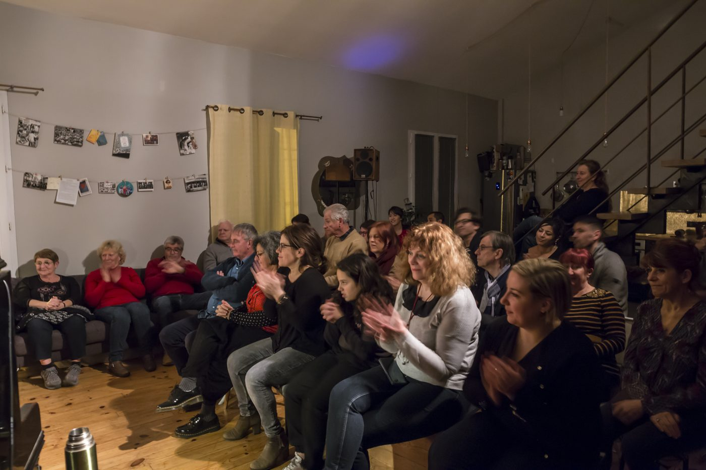

cotonn!
Un duo du quotidien au son décalé
Le projet
Embarquez pour un voyage poético-sonore.
Cotonn, c'est le duo d'Amélie et Samuel Zaroukian, né en 2017, à la naissance de Lou. Un cocon musical à 2 voix : des chansons qui parlent de nous et de notre vie, sur un ton décalé.
Les chansons sont des créations collectives. Amélie chante et écrit la plupart des textes ; elle compose ses mélodies en prenant appui sur les harmonies et le jeu de Samuel. Samuel compose, chante, joue du clavier et écrit aussi quelques textes.
Un concert théâtralisé, pour les petites jauges.
- FormeConcert théâtralisé, chanson à texte
- Depuis2017
- Sur scèneAmélie Zaroukian (chant), Samuel Zaroukian (chant, clavier)
- CréationCollective : textes et mélodies surtout d'Amélie, harmonies et musique de Samuel
« Bon concert du groupe Cotonn »
Midi Libre, 19 juin 2018 · lire l'article ↗
Cotonn · Collectif 22h13min
Images









Photos : Olivier
Faire venir Cotonn
Une salle, une soirée, un petit lieu ?
Écrivez au Collectif : 22h13min@gmail.com.
Collectif 22h13min · 22h13.fr